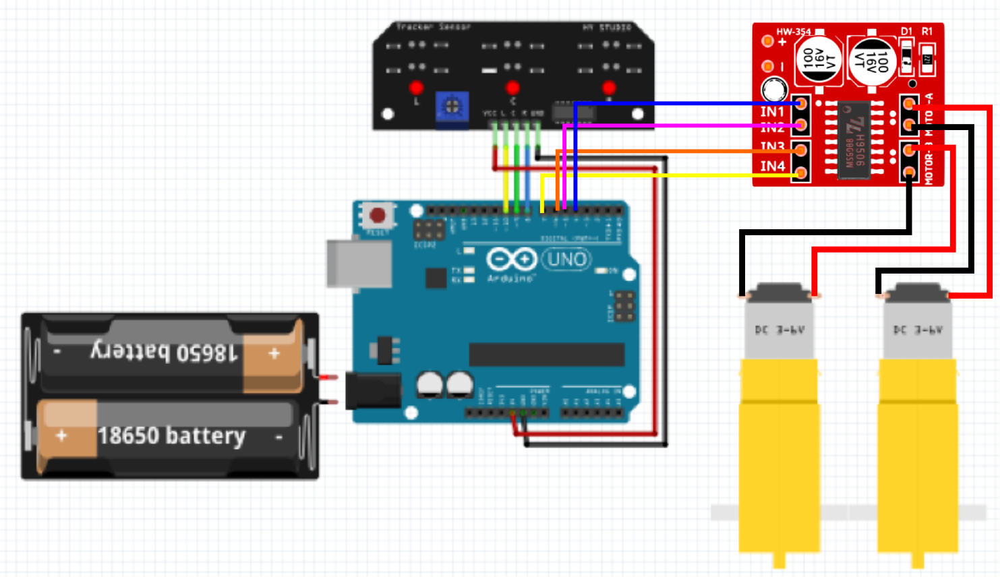
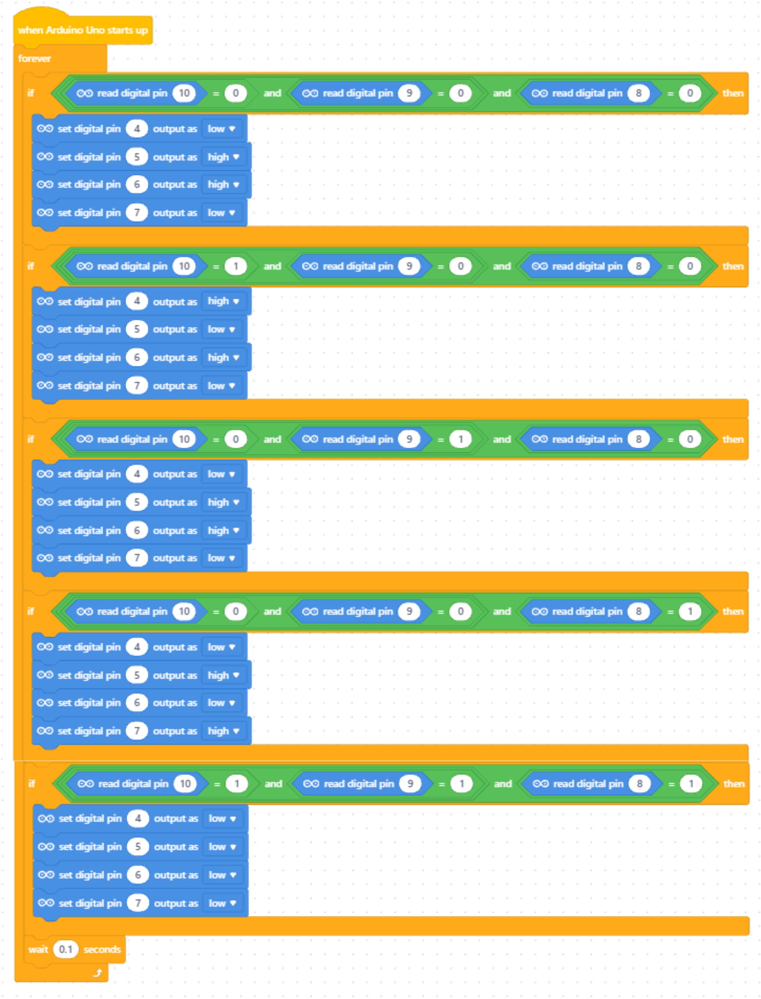

Praktik Pemrograman Blok mBlock & Robotika
Robot Pengikut Garis (Line Follower) dengan 3 Sensor IR & Driver L9110S
Mempelajari pembacaan 3 sensor garis digital (L, C, R) pada pin digital Arduino, logika percabangan arah gerak, serta
pengendalian 2 motor DC melalui modul driver
L9110S (HW-354)
menggunakan mBlock 5.
Skema Rangkaian Line Follower

Tracker Sensor
(3-CH)
- • Sensor L (Kiri) → Pin 10[cite: 4]
- • Sensor C (Tengah) → Pin 9[cite: 4]
- • Sensor R (Kanan) → Pin 8[cite: 4]
- • VCC & GND → 5V & GND[cite: 4]
Motor Driver
L9110S
- • IN1 / IN2 (Motor Kiri) → Pin 4 & 5[cite: 4]
- • IN3 / IN4 (Motor Kanan) → Pin 6 & 7[cite: 4]
- • VCC & GND → VIN / 5V & GND[cite: 4]
- • Sumber Daya → 2x Baterai 18650[cite: 4]
Simulator Robot
INTERAKTIFKlik Sensor untuk Deteksi Garis Hitam:
Motor Kiri
MAJU
DC
Motor Kanan
MAJU
DC
Pin Motor:
IN1:1 IN2:0 | IN3:1 IN4:0
Kode Program mBlock (Blok Logika)
mBlock 5 Visual Editor
blok1.png
Klik
gambar untuk memperbesar

Tabel Kebenaran Logika Line Follower
| Sensor L (Pin 10)[cite: 4] | Sensor C (Pin 9)[cite: 4] | Sensor R (Pin 8)[cite: 4] | Kondisi Lintasan | Motor Kiri (Pin 4,5)[cite: 4] | Motor Kanan (Pin 6,7)[cite: 4] | Gerakan Robot |
|---|---|---|---|---|---|---|
| 0 | 1 | 0 | Garis tepat di tengah | Maju (1, 0) | Maju (1, 0) | Maju Lurus |
| 1 | 0 / 1 | 0 | Garis berbelok ke kiri (L Hidup) | Mundur (0, 1) | Maju (1, 0) | Belok Kiri Tajam |
| 0 | 0 / 1 | 1 | Garis berbelok ke kanan (R Hidup) | Maju (1, 0) | Mundur (0, 1) | Belok Kanan Tajam |
| 1 | 1 | 1 | Garis melintang / Finish | Berhenti (0, 0) | Berhenti (0, 0) | Berhenti |
Serial Monitor (Simulasi Pembacaan Sensor & Motor)
[Serial Monitor Siap. Klik "Jalankan Simulasi" lalu klik tombol
sensor L / C / R di atas]